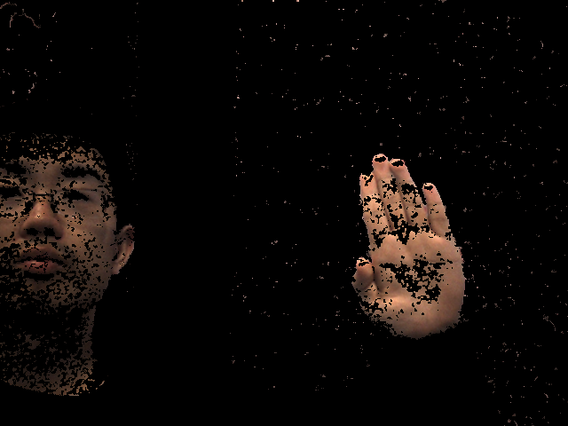
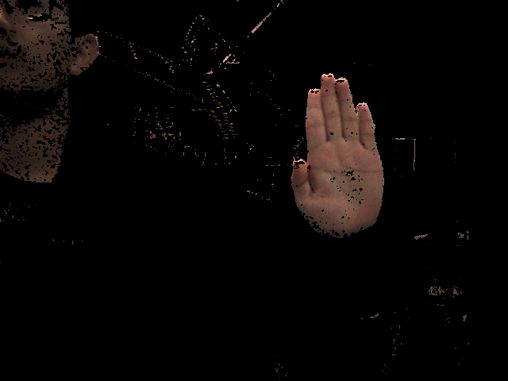
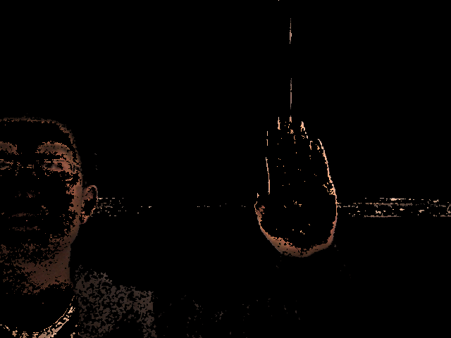
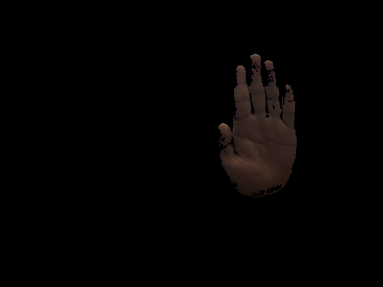
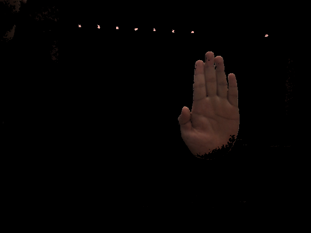
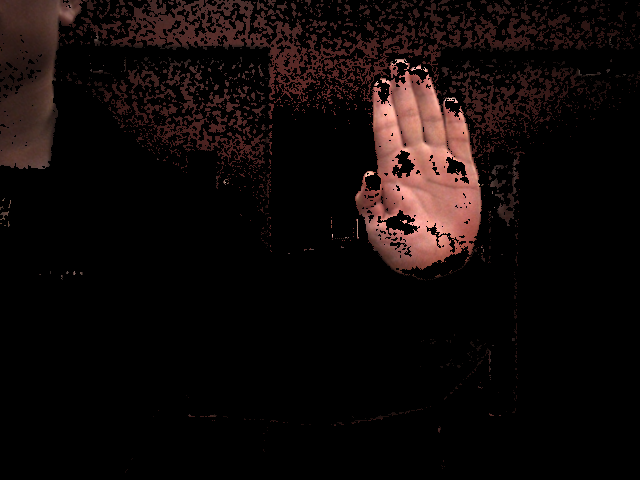

Hand Pose Estimation by Fusion of Multi-View Images
Avinash Vemuri, David Wen, Tan GemiciogluFall 2020 CS4476 Project
Georgia Tech
Abstract
Hand pose estimation is an important application of computer vision used for gesture recognition and hand tracking in videos, user input systems and virtual reality. The primary approaches for hand pose estimation rely on single RGB images, which often give inaccurate results or RGBD (RGB + depth) images which require the user to have expensive, specialized cameras. Recently, there have been advances in using two RGB images taken at the same time for stereoscopic vision as an alternative to perceiving depth with RGBD. We build on past attempts at using stereoscopic vision for hand pose estimation by utilizing a type of CNN that creates an early fusion of the two RGB images. We aim to use this improvement to obtain a better generalization of the stereoscopy and higher accuracies in the pose estimates.Introduction

Approach
For our approach, the dataset from J. Zhang et al. in [2] is formatted to stereo image pairs with 21 UVD keypoints as labels. Using the given camera calibration parameters and XYZ coordinate labels, the new UVD keypoints are created by projecting the XYZ keypoints onto the left image. The existing approach by J. Zhang et al. uses an adaptive GNN trained on Google images to create a probability map from the left image, which they then use with the explicit disparity map to create a final hand segmentation map to estimate the hand pose keypoints. For our implementation, we preprocess the stereo images using the skin color segmentation method outlined by R. F. Rahmat et al. in [5], and instead of using an explicit disparity map, we perform early fusion of the stereo images to let the deep CNN implicitly determine disparity. The deep CNN generates 21 probability maps for each keypoint, from which an integral image is computed to determine optimal UVD keypoints.For the training of the model, we use the three loss functions as shown in the figure below.
The first term is the traditional loss function, where the error is the squared error between the computed UVD and the labeled UVD. The second term is the squared error between the reprojection of the predicted UVD keypoints and the labeled UVD keypoints. The third term is the locality loss of the predicted UVD keypoints and the labeled UVD keypoints, using the inverse normal distribution centered at the labeled UVD and the probability of UVD in the generated probability map. Optimal weights for the last two terms will be determined by future experimentation.
Experiment and Results
We used the dataset provided in source [1]. The data set is made up of 18,000 stereo image pairs and 18,000 depth images taken in different scenarios and the ground-truth 3D positions of the palm and finger joints. Currently, the deep CNN model is a work in progress, so we do not have any numerical results or metrics. In the future, we plan on testing our models reliability in placing keypoints on hands in a variety of backgrounds and lighting.Qualitative Results
For the preprocessing step, the results for the skin segmentation for select images in different environments are shown below:






Currently, the skin segmentation method does not handle passive lighting very well (as shown in the third image in Fig 5.). For the other environments, the hand is preserved fairly well. Other skin features, such as the face of the researcher (in images 1-3 of Fig 5.) are moderately preserved and may affect the model, and additional preprocessing steps to remove the face may be beneficial. Improvement via contour filling may improve the results, and are currently being worked on.
References
-
B. Doosti, “Hand Pose Estimation: A Survey,” arXiv:1903.01013 [cs], Jun. 2019.
-
J. Zhang, J. Jiao, M. Chen, L. Qu, X. Xu, and Q. Yang, “3D Hand Pose Tracking and Estimation Using Stereo Matching,” arXiv:1610.07214 [cs], Oct. 2016.
-
B. Doosti, “Hand Pose Estimation: A Survey,” arXiv:1903.01013 [cs], Jun. 2019.
-
X. Liu, R. Jonschkowski, A. Angelova, and K. Konolige, “KeyPose: Multi-View 3D Labeling and Keypoint Estimation for Transparent Objects,” arXiv:1912.02805 [cs], May 2020..
-
R. F. Rahmat, T. Chairunnisa, D. Gunawan and O. S. Sitompul, "Skin color segmentation using multi-color space threshold," 2016 3rd International Conference on Computer and Information Sciences (ICCOINS), Kuala Lumpur, 2016, pp. 391-396, doi: 10.1109/ICCOINS.2016.7783247.